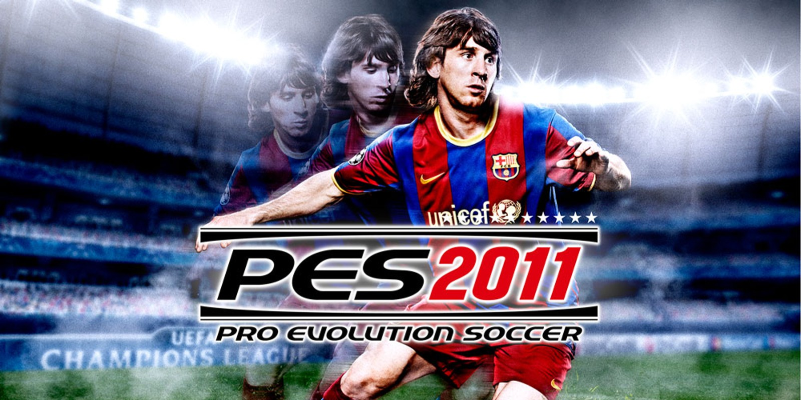

nome do nosso site
Pes 2011
⭐⭐⭐⭐⭐ 4.2 • 4.3M avaliações
O Pro Evolution Soccer 2011 (PES 2011) é um aclamado jogo eletrónico de simulação de futebol, desenvolvido e publicado pela Konami. Lançado inicialmente em 2010, conquistou o estatuto de marco na evolução dos jogos de desporto devido à reformulação completa da sua liberdade de passes, física realista da bola e à presença licenciada das maiores competições de clubes do mundo.
Jogar